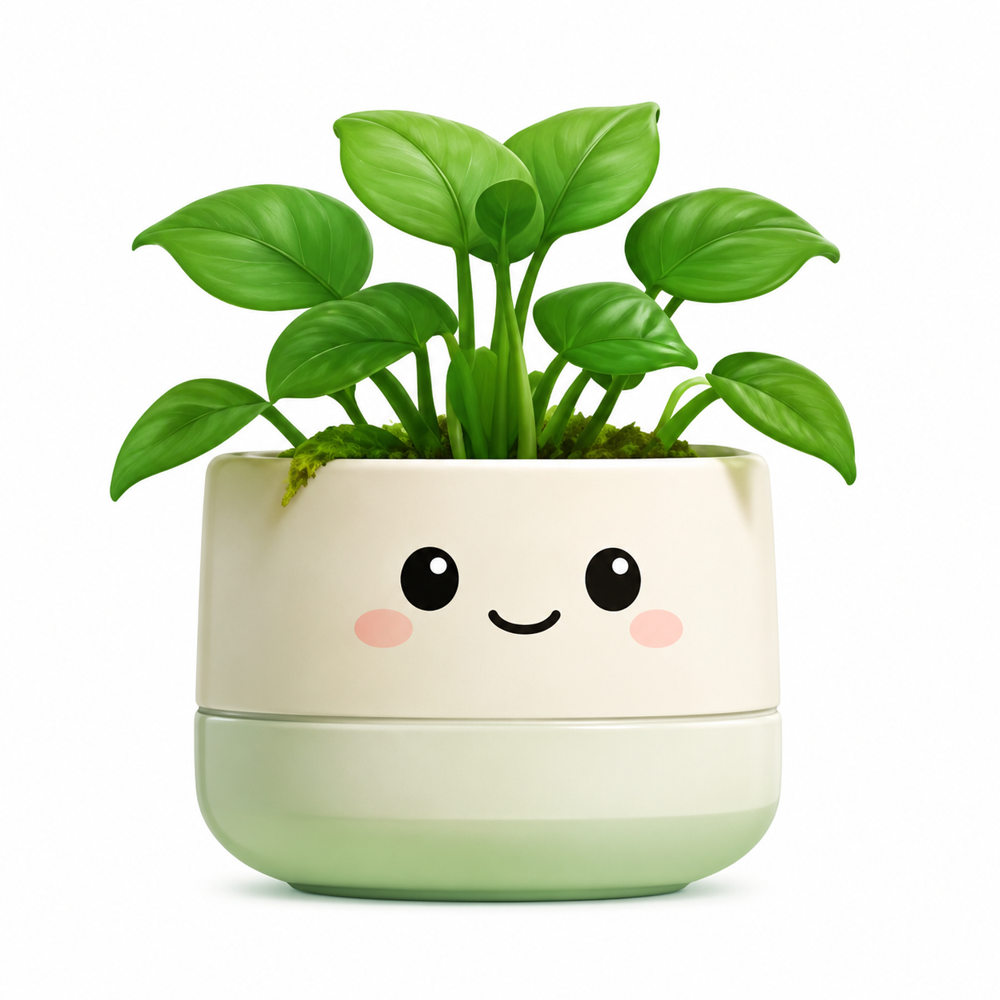

绿萝宝宝
陪伴你第 1 天
舒适度指数
舒适
核心体征
更新于 09:41（北京时间）
MQTT 连接状态
连接中
智能控制
当前模式：自动
手动补水
可以手动控制水箱出水
off
手动风扇
可以手动控制风扇运转
off
环境趋势
今日波动
土壤湿度(%)
空气湿度(%)
温度(°C)
光照(Lux)
事件日历
手动浇水
自动补水
2026年7月
Care Guide
养护指南
AI 建议预览
今日养护建议
绿萝宝宝 状态平稳，建议继续保持 25°C 左右环境，并在傍晚检查土壤湿度是否低于 35%。
植物种类设置
当前植物种类会作为后续 AI 养护建议的重要参考。
AI Assistant
智能对话
你好，我是 Green Mood 的养护助手。你可以直接问我浇水、光照、温湿度或通风建议。
Camera Service
摄像头服务
Flask Placeholder
实时摄像头画面
当前页面只展示后端接口预留，不直接在网页端接入摄像头画面。
GET /api/camera/status
读取摄像头服务状态与当前配置
GET /api/camera/config
获取后端预留的流地址、抓拍地址与服务说明
POST /api/camera/config
更新流地址、抓拍地址或运行状态，供后续 Flask 服务接入